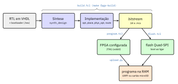

Síntese em FPGA¶
Este documento descreve o processo completo de implementação do SoC RISC-V em hardware FPGA, desde a síntese lógica do código VHDL até a transferência do bitstream e carregamento do firmware. O fluxo documentado utiliza a ferramenta Vivado da Xilinx e é orquestrado por scripts TCL automatizados, eliminando a necessidade de interação via interface gráfica.
Fluxo de Síntese e Implementação¶
Síntese Lógica¶
A síntese lógica é o processo de traduzir a descrição comportamental do hardware em linguagem VHDL (Register Transfer Level) para uma netlist de componentes genéricos disponíveis na FPGA-alvo. Este processo é realizado pelo comando synth_design no Vivado e transforma estruturas VHDL em primitivas físicas da arquitetura do dispositivo.
No contexto deste projeto, a síntese é invocada pelo script build.tcl com os seguintes parâmetros críticos:
synth_design -top soc_top -part xc7a100tcsg324-1 \
-generic "INIT_FILE=build/fpga/boot/bootloader.hex" \
-flatten_hierarchy rebuilt -retiming -quiet
Esses parâmetros são fundamentais para o projeto: o -part define o dispositivo-alvo da família Artix-7, enquanto -generic "INIT_FILE=..." automatiza a injeção do conteúdo do bootloader no arquivo HEX para a memória ROM (inicialização de BRAM), garantindo que o código de boot esteja presente no bitstream gerado sem necessidade de intervenção manual.
Tradução RTL para Netlist¶
O processo de síntese executa as seguintes transformações:
-
Análise semântica: O sintetizador verifica a descrição VHDL, realizando inferência de circuitos combinacionais e sequenciais a partir de expressões booleanas e estruturas
process. -
Mapeamento em primitivas: Os módulos VHDL são mapeados nas primitivas disponíveis na FPGA Xilinx Artix-7:
- LUTs (Look-Up Tables): Funções booleanas de até 6 entradas que implementam lógica combinacional
- Flip-Flops (FFs): Elementos de armazenamento para lógica sequencial (registradores)
- MUXEs: Seletores implementados via LUTs ou recursos dedicados
- Carry Chains: Caminhos de propagação rápida para operações aritméticas
-
Inferência de memórias: O sintetizador reconhece padrões de descrição de memórias (arrays, sinais com índice) e os mapeia em dois tipos distintos de recursos. A LUTRAM (RAM distribuída) utiliza as LUTs da malha lógica comum da FPGA, sendo adequada para estruturas pequenas como FIFOs curtas ou registradores de deslocamento com memória. Já a BRAM (Block RAM) consiste em blocos de silício dedicados com alta densidade, sendo a escolha ideal para a memória principal, bootloader ou qualquer estrutura que exija grande capacidade de armazenamento.
-
Generic Injection: O parâmetro
-generic "INIT_FILE=..."permite injetar o conteúdo do bootloader em memória ROM (inicialização de BRAM com o arquivo.hex), possibilitando que o código de boot esteja presente no bitstream gerado.
Flags de Otimização¶
Conhecer estas flags é útil caso seja necessário ajustar a área consumida ou resolver problemas de temporização (timing) no futuro.
| Flag | Função |
|---|---|
-flatten_hierarchy rebuilt |
Elimina a hierarquia de módulos, permitindo otimizações cross-boundary entre entidades VHDL |
-retiming |
Permite o deslocamento de registradores através de lógica combinacional para balancear caminhos críticos |
-quiet |
Suprime logs detalhados, reduzindo ruído na saída |
O resultado da síntese é uma netlist EDIF que representa a funcionalidade do design em termos de recursos genéricos da FPGA, sem considerar ainda a topologia física do dispositivo.
Implementação (Place and Route)¶
A fase de Implementação transforma a netlist genérica em um desenho físico concreto, alocando cada primitiva a uma localização específica no silício da FPGA e criando as conexões físicas entre elas. Esta fase é composta por três etapas sequenciais invocadas no build.tcl:
Otimização Pré-Place (opt_design)¶
O comando opt_design executa otimizações lógicas sobre a netlist sintetizada:
- Colapso de redundância: Remove lógica combinacional duplicada
- Ressíntese: Reformula expressões booleanas para reduzir o número de LUTs
- Extração de FSM: Identifica máquinas de estados e as implementa com otimização de codificação (binary, one-hot, gray)
- Otimização de carry: Agrupa operações aritméticas em cadeias de carry dedicadas
Posicionamento (place_design)¶
O algoritmo de Place aloca cada célula lógica (LUT, FF, BRAM, DSP) a uma localização física específica nas fatias (SLICEs) da FPGA. Este posicionamento deve satisfazer:
-
Restrições de localização: Pinos de entrada/saída (IOBs) devem ser mapeados nos pinos metálicos definidos no arquivo de constraints
-
Restrições de agrupamento: Blocos relacionados (como uma FSM e suas saídas) devem ser posicionados próximos para minimizar o comprimento das conexões
-
Otimização de timing: O algoritmo tenta posicionar células em caminhos críticos mais próximas para reduzir atraso de roteamento
A FPGA Xilinx Artix-7 xc7a100t possui 15.850 slices, cada um contendo 4 LUTs de 6 entradas e 8 flip-flops. O posicionamento é armazenado em um checkpoint (DCP - Design Checkpoint) para permitir iterações.
Roteamento (route_design)¶
O Route cria as conexões físicas entre as células posicionadas utilizando os switches de programação (configurable switch boxes) disponíveis nas matrizes de roteamento da FPGA:
-
Roteamento global: Conexões de clock e sinais de alta fan-out usam recursos dedicados (global buffers)
-
Roteamento local: Sinais comuns utilizam a matriz de roteamento general-purpose, composta por linhas e colunas de metal comutáveis
-
Análise de timing: Durante o roteamento, o Vivado calcula o atraso de cada conexão (delay) baseado no modelo de atraso RC das linhas de metal
O atraso total de um caminho (path delay) é a soma dos atrasos das células atravessadas mais os atrasos de roteamento. A ferramenta verifica se este atraso satisfaz as restrições temporais definidas no XDC.
Relatórios de Saída¶
Após a implementação, o script gera os seguintes relatórios:
| Relatório | Conteúdo |
|---|---|
utilization_route.rpt |
Utilização de cada tipo de recurso (LUT, FF, BRAM, DSP, IO) |
timing_summary.rpt |
Verificação de setup/hold para todos os caminhos; slack de cada domínio de clock |
power.rpt |
Estimativa de consumo de energia estático e dinâmico |
Automação via script TCL¶
O fpga/scripts/build.tcl implementa o fluxo completo, sem a interface gráfica do Vivado, em seis etapas:
- Configuração: o
board.tclescolhe, a partir deBOARD, o dispositivo (xc7a100tcsg324-1nas duas placas), a memória flash e os arquivos de restrições (common.xdce o XDC da placa); as saídas vão parabuild/fpga/<placa>/. - Leitura das fontes: os pacotes e o RTL do núcleo multiciclo, o RTL do SoC e dos periféricos e o da NPU, em VHDL-2008.
- Síntese:
synth_designcom o bootloader injetado na Boot ROM pelo genericINIT_FILE. - Implementação:
opt_design,place_design,phys_opt_designeroute_design; se ainda houver violação de setup, uma segunda passada dephys_opt_designapós o roteamento. Os relatórios de utilização, temporização e potência ficam emreports/. - Bitstream e flash:
write_bitstreamgera o.bit(volátil, carregado pelo JTAG) ewrite_cfgmemgera o.mcspara a flash Quad-SPI, com o bitstream comprimido para um boot mais rápido. - Resumo: utilização de recursos e folga de temporização.
make fpga-build BOARD=nexys_a7 # equivale a: vivado -mode batch -source fpga/scripts/build.tcl -tclargs nexys_a7
O program.tcl carrega o .bit pelo JTAG (make fpga-prog), e o flash.tcl grava o .mcs na flash (make fpga-flash), para que a placa inicie com o SoC sempre que for ligada.
Restrições Físicas e Temporais (Constraints)¶
Ancoragem Física (nexys4.xdc / nexys_a7.xdc)¶
Os arquivos de pinagem nexys4.xdc e nexys_a7.xdc (Xilinx Design Constraints) faz a ligação entre a lógica descrita em VHDL e o mundo físico dos pinos metálicos do encapsulamento da FPGA. Cada declaração no XDC especifica o mapeamento de uma porta lógica (definida na entidade VHDL soc_top) a um pino específico do dispositivo.
Mapeamento Porta → Pino¶
A diretiva PACKAGE_PIN atribui uma porta lógica a um pino físico do encapsulamento:
Esta declaração significa:
- Porta
CLK_i(sinal de clock de entrada) mapeada ao pino E3 do encapsulamento CSG324 - Pino E3 corresponde ao oscilador de 100 MHz da placa (Nexys A7 e Nexys 4)
A justificativa para este mapeamento específico reside no hardware da placa de desenvolvimento, onde o cristal oscilador está conectado fisicamente a este pino.
Padrão de Tensão IOSTANDARD¶
A diretiva IOSTANDARD LVCMOS33 define o padrão de tensão para os pinos de entrada/saída:
- LVCMOS33: Low-Voltage CMOS com tensão de 3.3V
- Este padrão é definido porque:
- A placa utiliza tensão de 3,3 V nos bancos de I/O
- Os transceptores USB-UART (FTDI) operam em 3.3V
- LEDs e chaves pull-up/pull-down da placa são compatíveis com 3.3V
Utilizar um padrão incompatível resultaria em níveis lógicos incorretos, podendo danificar componentes ou causar falhas de comunicação.
Configuração de Energia Global¶
O arquivo também define parâmetros globais de configuração:
Estas propriedades configuram o banco de tensão de configuração (Configuration Bank Voltage), determinando que os pinos de configuração operem a 3.3V. A escolha de CFGBVS=VCCO indica que a tensão de configuração segue a tensão VCCO dos bancos de I/O, neste caso 3.3V.
Restrições de Clock¶
A definição do clock no XDC é fundamental para a Análise Estática de Temporização (STA - Static Timing Analysis):
Propósito da Declaração de Clock¶
A diretiva create_clock comunica ao Vivado que o pino CLK_i é um sinal periódico com período de 10.0 nanossegundos (frequência de 100MHz). Com esta informação, a ferramenta pode:
-
Calcular atrasos de caminho: Cada caminho entre registradores tem um atraso máximo permitido definido pelo período do clock
-
Verificar setup (tempo de preparação): Para um flip-flop capturar corretamente um dado na próxima borda de clock, o dado deve ser estável por pelo menos
T_su(setup time) antes da borda. O Vivado verifica seT_arrival + T_su <= T_period -
Verificar hold (tempo de manutenção): O dado deve permanecer estável por pelo menos
T_h(hold time) após a borda de clock para garantir captura correta. O Vivado verifica seT_arrival >= T_h -
Determinar domínios de clock: Sinais assíncronos com clocks diferentes são tratados como domínios de clock separados, e o projetista deve inserir lógica de sincronização (async fifo, two-stage synchronizer) para transferência entre domínios
Relação Física¶
Fisicamente, o clock de 100MHz alimenta os flip-flops do design através da rede de clock da FPGA (global buffers BUFG). Sem a declaração create_clock, o Vivado não conseguiria determinar as janelas de tempo válidas para amostragem de dados, e a análise de temporização seria incompleta ou incorreta.
A violação de setup resulta em metastabilidade, onde o flip-flop pode oscilar entre estados válidos por um tempo indefinido antes de estabilizar, corrompendo o dado registrado.
Programação e Upload na FPGA¶
Configuração de Hardware via JTAG¶
O protocolo JTAG (Joint Test Action Group) é a interface de comunicação que permite ao Vivado transferir o bitstream gerado do computador para a memória de configuração da FPGA. Nas placas Nexys A7 e Nexys 4, essa comunicação ocorre pelo mesmo cabo USB da alimentação e da UART, por meio do conversor USB-JTAG da placa.
O script program.tcl executa esta operação:
open_hw_manager
connect_hw_server
open_hw_target
set device [lindex [get_hw_devices] 0]
current_hw_device $device
set_property PROGRAM.FILE ./build/fpga/$boardName/bitstream/soc_top.bit $device
program_hw_devices $device
Processo de Programação¶
-
Conexão: O Vivado abre o Hardware Manager e conecta ao servidor de hardware local (ou remoto via cable server)
-
Descoberta: O comando
open_hw_targetvarre a cadeia JTAG e identifica os dispositivos conectados -
Seleção: O dispositivo FPGA (xc7a100t) é selecionado como alvo
-
Transferência: O arquivo
.bit(contendo a configuração dos CLBs, BRAMs, IOBs, e rotas) é transferido via JTAG para a memória de configuração da FPGA -
Inicialização: A FPGA inicia a execução imediata após a configuração, com o código do bootloader sendo executado a partir da BRAM carregada com o conteúdo de
bootloader.hex
Carga de Software via UART¶
Após a FPGA estar configurada, o firmware da aplicação usuário deve ser transferido para a RAM do SoC. O script upload.py automatiza este processo utilizando a UART do sistema.
Arquitetura do Protocolo de Upload¶
O protocolo implementado segue uma sequência de handshake:
-
Reset de Hardware: O script usa o pino RTS da UART para falar com o controlador de depuração, que reseta o SoC com o boot na ROM:
-
Aguarda Bootloader: O SoC, ao inicializar, transmite a string "[BOOT]" via UART indicando que está pronto para receber firmware
-
Handshake:
- Host envia Magic Word
0xCAFEBABEem até ~1 s depois do[BOOT](o host envia em ~0,1 s); sem ela, o bootloader tenta carregar o programa gravado no cartão microSD - Bootloader confirma com
!
- Host envia Magic Word
-
Transmissão do Tamanho:
- Host envia tamanho do binário (4 bytes, little-endian)
- Formato:
struct.pack('<I', file_size) - O bit 31 ligado (
--save) pede ao bootloader que grave o programa também no cartão microSD; tamanho 0 com o bit 31 (--erase-sd) apaga o programa do cartão
-
Transferência do Binário:
- Dados enviados em blocos de 64 bytes
- ACK visual: bootloader envia
.a cada 1KB recebido
-
Confirmação: Bootloader envia
>ao final da transmissão bem-sucedida. Com--save, as mensagens do cartão (SD: gravado,SD: sem cartao...) vêm antes do>, e oupload.pyas mostra -
Salto para Aplicação: O bootloader transfere execução para o endereço
0x80000800onde a aplicação foi gravada
Detalhes de Implementação¶
| Aspecto | Valor |
|---|---|
| Porta | COM=/dev/ttyUSB1 no make upload (o upload.py usa COM6 se chamado sem -p) |
| Baud rate | 921600 |
| Tamanho do bloco | 64 bytes |
| Endereço de carregamento | 0x80000800 |
| Timeout | 2 segundos |
O uso de baud rate alto (921600) reduz o tempo de transferência, e a transferência fragmentada permite feedback visual progressivo durante o upload.
Resumo do Pipeline Completo¶
O fluxo de implementação pode ser sintetizado na seguinte sequência:

build.tcl sintetiza, implementa e gera o bitstream e a imagem da flash; o program.tcl configura a FPGA pelo JTAG e o flash.tcl grava a flash; por fim, o programa chega à RAM pela UART ou pelo cartão.Este pipeline automatizado permite iterações rápidas durante o desenvolvimento, onde cada modificação no código VHDL pode ser sintetizada, programada e testada sem intervenção manual na ferramenta de desenvolvimento.